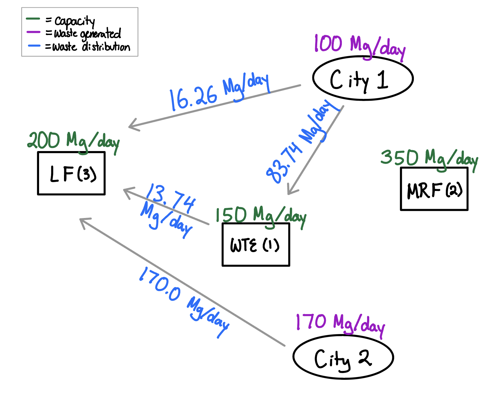
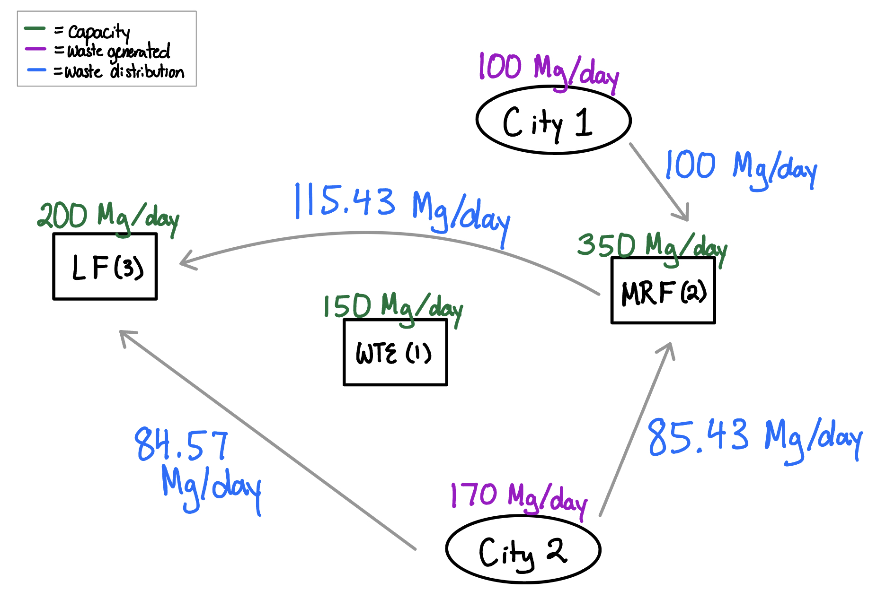

#given information disposal_facility = ["WTE", "recycling", "landfill"]; capacity = [150, 350, 200]; #in Mg/d fixed_cost = [2500, 1500, 2000]; #in $/d tipping_fee = [60, 7, 50]; #in $/Mg recycling_cost = [0, 45, 0]; #in $/Mg transportation_cost = 1.5; #in $/Mg-km dist_to = ["WTE", "MRF", "landfill"]; dist_1 = [15, 5, 30]; #in km dist_2 = [10, 15, 25]; #in km dist_MRF = [15, 0, 32]; #in km dist_LF = [8, 32, 0]; #in km dist_WTE = [0, 15, 18]; #in km source = ["city 1", "city 2"]; production = [100, 170]; #in Mg/day component = ["Food", "Paper", "Plastics", "Textiles", "Rubber", "Wood", "Yard", "Glass", "Ferrous", "Aluminum", "Metals", "Misc"]; total_mass = [0.15, 0.4, 0.05, 0.03, 0.02, 0.05, 0.18, 0.04, 0.02, 0.02, 0.01, 0.03]; combustion_ash_p = [0.08, 0.07, 0.05, 0.1, 0.15, 0.02, 0.02, 1, 1, 1, 1, 0.7]; MRF_recycling_p = [0, 0.55, 0.15, 0.1, 0, 0.3, 0.4, 0.6, 0.75, 0.8, 0.5, 0]; #determining overall recycling and ash fractions recycling_frac = sum(total_mass .* MRF_recycling_p); ash_frac = sum(total_mass .* combustion_ash_p);
The overall recycling fraction for the waste produced is
print(round(recycling_frac, digits=3))0.378
The overall combustion ash fraction for the waste produced is
print(round(ash_frac, digits=3))0.164
There are three main decision variables. One decision variable, $W_{ij}$, is the waste transported from city i to disposal j. This is measured in Mg/day. Another decision variable, $R_{kj}$, is the residual waste transported from disposal k to disposal j. This is measured in Mg/day. The last decision variabe is the operational status of disposal j, $Y_j$. This is a binary variable and its status are on/off.
using JuMP using Cbc waste = Model(Cbc.Optimizer); I = 1:length(source); J = 1:length(disposal_facility); @variable(waste, W[i in I, j in J] >= 0); @variable(waste, R[k in J, j in J] >= 0); @variable(waste, Y[j in J], Bin);
The objective of this function is to minimize the total cost of waste disposal. Here, the cost includes fixed costs, tipping fee, recylcing cost, and transportation costs. For WTE costs, we have:
\[ 2500*Y_1 + 60*(W_{1,1} + W_{2,1} + R_{2,1}) \]
For MRF costs, we have:
\[ 1500*Y_2 + 7*(W_{1,2} + W_{2,2}) + 0.378*(45)*(W_{1,2} + W_{2,2}) \]
For LF costs, we have:
\[ 2000*Y_3 + 50*(W_{1,3} + W_{2,3} + R_{1,3} + R_{2,3}) \]
For transportation cost, we have:
\[ 1.5*[15*W_{1,1} + 5*W_{1,2} + 30*W_{1,3} + 10*W_{2,1} + 15*W_{2,2} + 25*W_{2,3} + 18*R_{1,3} + 15*R_{2,1} + 32*R_{2,3}] \]
We want to minimize the sum of all these costs as our objective.
@objective(waste, Min, sum([82.5 31.5 95; 75 46.51 87.5] .* W) + sum([0 0 77; 82.5 0 98; 0 0 0] .* R) + sum([2500, 1500, 2000] .* Y));
One constraint is that all the waste and recycling must stay within the disposal facility's capacities. \ For WTE,
\[ W_{1,1} + W_{2,1} + R_{2,1} ≤ 150 \]
For MRF,
\[ W_{1,2} + W_{2,2} ≤ 130 \]
For LF,
\[ W_{1,3} + W_{2,3} + R_{2,3} ≤ 200 \]
Another constraint is that any waste from the WTE must equal to the ash producesd.
\[ R_{1,3} = ash_{fraction} * (W_{1,1} + W_{2,1} + R_{2,1}) \]
Additionally, any waste from the MRF must equal the nonrecycled waste that entered the MRF.
\[ R_{2,1} + R_{2,3} = (1-recycling_{fraction}) * (W_{1,2} + W_{2,2}) \]
Lastly, we need to define the binary variable and make sure that the waste streams are nonnegative.
\[ Y_1 = 0\, if\, W_{1,1} + W_{2,1} + R_{2,1} = 0.\, Else,\, Y_1 = 1. \\ Y_2 = 0\, if\, W_{2,1} + W_{2,2} = 0.\, Else,\, Y_2 = 1. \\ Y_3 = 1 \\ W_{i,j} ≥ 0 \\ R_{i,j} ≥ 0 \\ \]
@constraint(waste, city[i in I], sum(W[i,:]) == production[i]); @constraint(waste, wte, W[1,1] + W[2,1] + R[2,1] <= 150); @constraint(waste, mrf, W[1,2] + W[2,2] <= 350); @constraint(waste, lf, W[1,3] + W[2,3] + R[2,3] + R[1,3] <= 200); @constraint(waste, resid1, R[1,3] == ash_frac .* (W[1,1] + W[2,1] + R[2,1])); @constraint(waste, resid2, R[2,1] + R[2,3] == (1-recycling_frac) .* (W[1,2] + W[2,2])); @constraint(waste, resid3, sum(R[3,:]) == 0); @constraint(waste, noresiddiag, sum(R[i, i] for i in I) == 0); @constraint(waste, noresid, R[1,2] == 0); @constraint(waste, commit1, !Y[1] => {W[1,1] + W[2,1] + R[2,1] == 0}); @constraint(waste, commit2, !Y[2] => {W[1,2] + W[2,2] == 0}); @constraint(waste, commit3, Y[3] == 1);
set_silent(waste) optimize!(waste)
The objective value or cost of disposal in dollars is:
round(objective_value(waste), digits=2)28886.36
\[ \\ \]
The statuses of the disposal are
value.(Y)1-dimensional DenseAxisArray{Float64,1,...} with index sets: Dimension 1, 1:3 And data, a 3-element Vector{Float64}: 1.0 0.0 1.0
\[ \\ \]
The waste transported from each city in Mg/day is
value.(W)2-dimensional DenseAxisArray{Float64,2,...} with index sets: Dimension 1, 1:2 Dimension 2, 1:3 And data, a 2×3 Matrix{Float64}: 83.7421 0.0 16.2579 0.0 0.0 170.0
\[ \\ \]
The residual waste transported between each facility in Mg/day is
value.(R)2-dimensional DenseAxisArray{Float64,2,...} with index sets: Dimension 1, 1:3 Dimension 2, 1:3 And data, a 3×3 Matrix{Float64}: 0.0 0.0 13.7421 0.0 0.0 0.0 0.0 0.0 0.0
\[ \\ \]
From these values, we get the diagram below: 
We see that the recycling facility (MRF) will not be used in this case. Only the LF and WTE facilities are used.
The variables and constraints will remain the same, but the objective will change now that the costs are changing. For WTE costs, we now have:
\[ 2500*Y_1 + 75*(W_{1,1} + W_{2,1} + R_{2,1}) \]
For MRF costs, we still have:
\[ 1500*Y_2 + 7*(W_{1,2} + W_{2,2}) + 0.378*(45)*(W_{1,2} + W_{2,2}) \]
For LF costs, we still have:
\[ 2000*Y_3 + 50*(W_{1,3} + W_{2,3} + R_{1,3} + R_{2,3}) \]
For transportation cost, we now have:
\[ 2*[15*W_{1,1} + 5*W_{1,2} + 30*W_{1,3} + 10*W_{2,1} + 15*W_{2,2} + 25*W_{2,3} + 18*R_{1,3} + 15*R_{2,1} + 32*R_{2,3}] \]
using JuMP using Cbc waste_c = Model(Cbc.Optimizer); I = 1:length(source); J = 1:length(disposal_facility); @variable(waste_c, Wc[i in I, j in J] >= 0); @variable(waste_c, Rc[k in J, j in J] >= 0); @variable(waste_c, Yc[j in J], Bin); @objective(waste_c, Min, sum([105 34.01 110; 95 54.01 100] .* Wc) + sum([0 0 86; 105 0 114; 0 0 0] .* Rc) + sum([2500, 1500, 2000] .* Yc)); @constraint(waste_c, city[i in I], sum(Wc[i,:]) == production[i]); @constraint(waste_c, wte, Wc[1,1] + Wc[2,1] + Rc[2,1] <= 150); @constraint(waste_c, mrf, Wc[1,2] + Wc[2,2] <= 350); @constraint(waste_c, lf, Wc[1,3] + Wc[2,3] + Rc[2,3] + Rc[1,3] <= 200); @constraint(waste_c, resid1, Rc[1,3] == ash_frac .* (Wc[1,1] + Wc[2,1] + Rc[2,1])); @constraint(waste_c, resid2, Rc[2,1] + Rc[2,3] == (1-recycling_frac) .* (Wc[1,2] + Wc[2,2])); @constraint(waste_c, resid3, sum(Rc[3,:]) == 0); @constraint(waste_c, noresiddiag, sum(Rc[i, i] for i in I) == 0); @constraint(waste_c, noresid, Rc[1,2] == 0); @constraint(waste_c, commit1, !Yc[1] => {Wc[1,1] + Wc[2,1] + Rc[2,1] == 0}); @constraint(waste_c, commit2, !Yc[2] => {Wc[1,2] + Wc[2,2] == 0}); @constraint(waste_c, commit3, Yc[3] == 1); set_silent(waste_c) optimize!(waste_c)
The objective value or cost of disposal in dollars is:
round(objective_value(waste_c), digits=2)33131.13
\[ \\ \]
The statuses of the disposal are
value.(Yc)1-dimensional DenseAxisArray{Float64,1,...} with index sets: Dimension 1, 1:3 And data, a 3-element Vector{Float64}: 0.0 1.0 1.0
\[ \\ \]
The waste transported from each city in Mg/day is
value.(Wc)2-dimensional DenseAxisArray{Float64,2,...} with index sets: Dimension 1, 1:2 Dimension 2, 1:3 And data, a 2×3 Matrix{Float64}: 0.0 100.0 0.0 0.0 85.4305 84.5695
\[ \\ \]
The residual waste transported between each facility in Mg/day is
value.(Rc)2-dimensional DenseAxisArray{Float64,2,...} with index sets: Dimension 1, 1:3 Dimension 2, 1:3 And data, a 3×3 Matrix{Float64}: 0.0 0.0 0.0 0.0 0.0 115.43 0.0 0.0 0.0
\[ \\ \]
From these values, we get the diagram below: 
In the new plan, we now will be using MRF but will no longer be using the WTE facility. Additionally, the cost is now 4244.77 dollars more expensive than the previous plan.
Lecutre 13 from https://viveks.me/environmental-systems-analysis/schedule/ https://tex.stackexchange.com/questions/46189/how-do-i-add-a-line-break-in-display-math-mode http://www.emerson.emory.edu/services/latex/latex_119.html